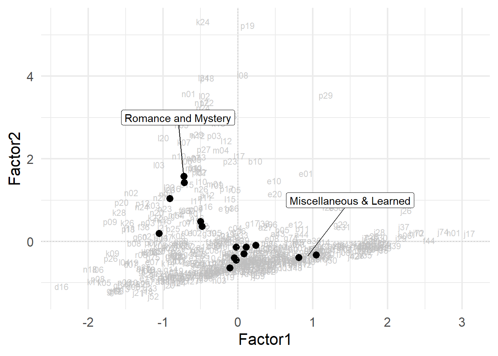

| Section | Component | Register | Files | Tokens |
|---|---|---|---|---|
| Informative | a | Press-reportage | 44 | 100 554 |
| b | Press-editorial | 27 | 61 604 | |
| c | Press-reviews | 17 | 40 704 | |
| d | Religion | 17 | 39 399 | |
| e | Skills & hobbies | 36 | 82 345 | |
| f | Popular Lore | 48 | 110 299 | |
| g | Belles Lettres, Biography, Memoirs, etc. | 75 | 173 096 | |
| h | Miscellaneous | 30 | 70 117 | |
| j | Learned | 80 | 181 888 | |
| Imaginative | k | General Fiction | 29 | 68 488 |
| l | Mystery and Detective Fiction | 24 | 57 169 | |
| m | Science Fiction | 6 | 14 470 | |
| n | Adventure and Western Fiction | 29 | 69 342 | |
| p | Romance and Love Stories | 29 | 70 022 | |
| r | Humor | 9 | 21 695 |
Sample Paper
Abstract
This is a sample abstract for the sample paper just to show how you can add an abstract.
1 Introduction
In this sample paper a few tables, plots and pieces of text are reproduced from the register analysis case study. The goal is to illustrate some things to be expected from a final paper from this course.
For example, a key aspect of the corpus in this analysis is its register structure. Therefore, next to a brief description of the corpus itself, it would make sense to add and describe a table such as Table 1.
Tables can be written either in R chunks or manually, but in any case they should have a caption and be cross-referenceable, like Table 2. That table defines the 13 numerical variables, which are very few compared to what Biber (1988) used.
| Name | Value |
|---|---|
ttr |
Type token ratio (number of types divided by number of tokens)1 |
word_len |
Average word length, in characters |
p_mw |
Proportion of combined tags; typically clitics as in she’s |
p_c |
Proportion of punctuation characters |
p_ppss |
Proportion of personal pronouns nominative, besides third person singular |
p_noun |
Proportion of nouns |
p_bigr |
Number of unique word bigrams, relative to document size |
p_nomin |
Proportion of nominalisations (nouns ending in -tion, -ment, -ness, or -ity) |
p_pobi |
Number of unique pos tag bigrams, relative to document size |
p_adj |
Proportion of adjectives |
p_neg |
Number of negations, relative to document size |
p_adv |
Proportion of adverbs |
p_qual |
Number of qualifiers, relative to document size |
The annotation was performed with the help of the tidyverse, mclm and xml2 packages (Wickham et al. 2019; Speelman & Montes 2022; Wickham, Hester & Ooms 2021). Yes, packages should be cited as well.
2 Intermediate session
For specific code ran that is key to the paper, it might be interesting to show it (without evaluating) it in the paper, for example:
But, given that the code is also shared, it is not strictly necessary. We might want to add more references, though, such as citing R Core Team (2022), adding Levshina (2015) to Biber (1988), and including a quote:
In the description of textual variation, where the factors represent underlying textual dimensions, there is no reason to assume that the factors are completely uncorrelated, and therefore a Promax rotation is recommended. (Biber 1988: 85)
Of course, we should use cross references to refer to useful figures and tables such as Figure 1 and Table 3.
| Variable | Factor1 | Factor2 | Factor3 | Factor4 |
|---|---|---|---|---|
| ttr | 0.98 | |||
| word_len | 0.88 | -0.35 | ||
| p_bigr | 0.92 | |||
| p_pobi | -0.35 | 0.42 | 0.62 | |
| p_mw | 0.95 | |||
| p_c | -0.40 | 0.54 | ||
| p_nomin | 0.79 | |||
| p_noun | 0.61 | -0.39 | -0.47 | |
| p_ppss | -0.44 | 0.53 | 0.31 | |
| p_adj | 0.68 | -0.30 | ||
| p_neg | 0.87 | |||
| p_adv | -0.38 | 0.33 | 0.58 | |
| p_qual | 0.67 |

3 Discussion of results
More plots and tables would probably be in order, this is just a sample! But it will also be useful to add linguistic examples, such as (1), maybe with interlinear glosses using glossr!
- He who has not the Son has not the life .
4 Conclusion
In conclusion, best of luck to everyone!
References
Biber, Douglas. 1988. Variation across Speech and Writing. First. Cambridge University Press. https://doi.org/10.1017/CBO9780511621024.
Levshina, Natalia. 2015. How to do linguistics with R: Data exploration and statistical analysis. Amsterdam; Philadelphia: John Benjamins Publishing Company.
R Core Team. 2022. R: A language and environment for statistical computing. Vienna, Austria: R Foundation for Statistical Computing. https://www.R-project.org/.
Speelman, Dirk & Mariana Montes. 2022. Mclm: Mastering corpus linguistics methods. https://CRAN.R-project.org/package=mclm.
Wickham, Hadley, Mara Averick, Jennifer Bryan, Winston Chang, Lucy D’Agostino McGowan, Romain François, Garrett Grolemund, et al. 2019. Welcome to the tidyverse. Journal of Open Source Software 4(43). 1686. https://doi.org/10.21105/joss.01686.
Wickham, Hadley, Jim Hester & Jeroen Ooms. 2021. xml2: Parse XML. https://CRAN.R-project.org/package=xml2.
Footnotes
The type token ratio of different texts can only be compared if they have similar lengths, which is the case with the Brown corpus.↩︎